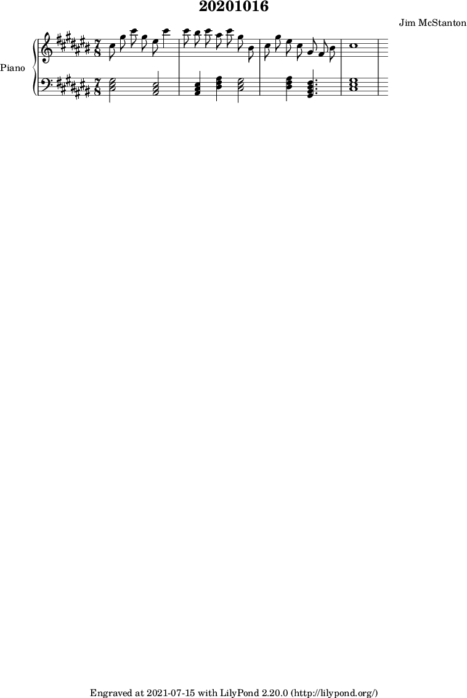

Another tiny piece. This one is in C# Major and started off as messing with a melody that has large jumps then small steps and back. This ended up in 7/8 time just because I liked the way the first measure ended up, which made timing on harmonizing a little interesting. The other interesting thing was messing with the harmony by making the root of the chord the same note in the melody, then making the melody note the 7th of the underlying chord.
Last thought here: it is kind of hilarious how long these tiny pieces take to make.
